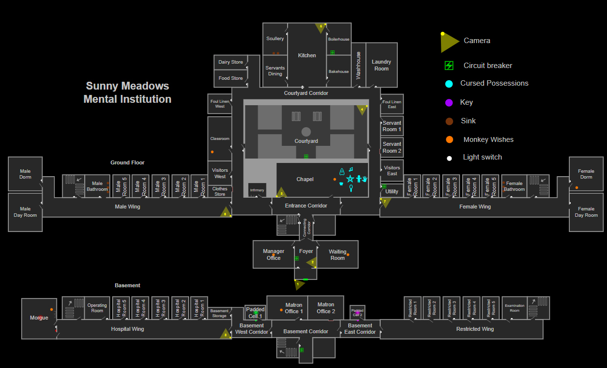

Sunny Meadows, похоже, когда-то был католическим приходом/лечебницей, поскольку в нём есть старая часовня и несколько намёков на то, что когда-то он был религиозным учреждением. В отличие от большинства других карт, здание кажется полностью заброшенным и даже несколько спешащим (например, большая часть «хирургического» оборудования в морге всё ещё на месте, как и некоторые разлагающиеся трупы и части человеческих тел). Неясно, что именно привело к закрытию приюта и как давно это произошло. Это ветхое, захламлённое место, где каждый шаг эхом разносится по коридорам. Обратите внимание на то, как призрак скребётся по стенам, и остерегайтесь его гнева — вы можете оказаться разлученными со своими коллегами-исследователями во время охоты, поскольку двери крыльев закрываются. В то время как заброшенная каменная обстановка и нечестивая часовня достаточно жутки, истинные ужасы таятся в недрах локации: залитые кровью стены, гниющие трупы и груды запёкшейся крови являются достаточным свидетельством зверств, творимых внутри. Крики бедных душ, замученных и убитых в его тёмных пределах, всё ещё слышны сквозь тихую черноту.
Sunny Meadows Mental Institution
Sunny Meadows Mental Institution (или просто Sunny Meadows) — карта в Phasmophobia, самая большая по количеству комнат, пришедшая на смену оригинальной карте Asylum. Это двухэтажный ветхий санаторий, на котором можно играть как на всей карте, так и разделив его на пять зон, одна из которых выбирается случайным образом для контракта в ограниченной версии Restricted.
Описание

Структура
На карте Sunny Meadows 69 комнат, разделённых на 5 крыльев и 2 этажа, а также открытый двор.[2] Крылья разделяются следующим образом:
Главное крыло — сзади наверху
В этом крыле, построенном вокруг большого внутреннего двора, имеются удобства для пациентов и посетителей, а также помещения для персонала.Главное крыло — сзади наверху
В этом крыле находятся несколько спален, общежитие, общая ванная комната, а также дневная комната для пациентов учреждения мужского пола.Главное крыло — сзади наверху
В этом крыле находятся несколько спален, общежитие, общая ванная комната, а также дневная комната для пациентов учреждения женского пола.Главное крыло — сзади наверху
В этом крыле находится несколько общих больничных палат, а также операционная и жуткий морг, в котором до сих пор воняют останки его прежних обитателей.Главное крыло — сзади наверху
В этом крыле, предположительно, наиболее агрессивные или несчастные пациенты получали «лечение» в форме жестоких пыток. В нём содержалось несколько камер, наполненных кровью.Советы по местоположению
- Карта с надписями, хотя и выветрившаяся и вообще трудночитаемая, находится в коридоре у входа.
- Названия комнат «Комната для прислуги 1» (Servant Room 1) и «Комната для прислуги 2» (Servant Room 2) на этой карте поменяны местами по сравнению с тем, что на самом деле определено в игре.
- В некоторых комнатах есть старые будильники типа колокольчика и метрономы, с которыми призрак может взаимодействовать.
- Кресты, найденные висящими на стенах в различных частях здания, могут быть перевёрнуты призраком, который издаст громкий царапающий звук. Обнаружение перевёрнутого креста (за исключением тех, что находятся в часовне) — явный признак того, что призрак находится поблизости. Кресты нельзя вернуть в вертикальное положение после того, как с ними взаимодействовали.
- Как правило, главные коридоры завалены подпорками и препятствиями; бежать по прямой, не наткнувшись ни на что, вообще невозможно.
- Призрак не может выполнить паранормальное явление для игроков, находящихся в следующих комнатах:
- Basement west corridor (Западный коридор подвала)
- Restricted area (Запретная зона)
- Courtyard corridor (Коридор во внутреннем дворе)
- Female wing (Женское крыло)
- Male wing (Мужское крыло)
- Любимой комнатой призрака не может быть ни один из коридоров и лестниц, за исключением входного коридора (рядом с часовней). Комнатой призрака также не может быть фойе на большой версии карты (это может быть любимой комнатой в версии Restricted).
- В настоящее время существует ошибка, из-за которой, если призрак находится во входном коридоре, Доска Уиджи может вместо этого указать его текущее местоположение как Bake House.
- Так как локация большая, поиск места обитания может занять много времени. Лучший способ найти место обитания на этой карте — держать светильник в руке и не спеша исследовать коридоры на признаки шумов издаваемых призраком (важно: на локации присутствуют уникальные фоновые шумы, не стоит их путать со звуками призрака). Призрак с некоторым шансом затушит светильник, и это даст вам сигнал того, что вы рядом с ним. Также стоит заглядывать в каждую комнату на случай обнаружения кости. Светильник сильно экономит рассудок игрока, а из-за того, что локация большая, пассивный расход рассудка снижен, например, с светильником 3-го уровня вы сможете пройти всю больницу, потеряв всего до 5% рассудка, бродя в полной темноте.
Укрытия и стратегии
- Когда начинается охота, двери в каждое крыло закрываются, заставляя игроков работать с той областью карты, в которой они оказываются в момент начала охоты, потенциально отделяя игроков друг от друга. Таким образом, разумно проверить наличие укрытий как рядом с местом проведения расследования, так и в крыльях по пути в любимую комнату, поскольку добраться до известных мест для укрытия может оказаться невозможным.
- Убегая от призрака, эффективно используйте различные предметы, такие как перегородки и шкафы, загромождающие коридоры, чтобы постоянно выходить из поля зрения призрака и добраться до укрытия или даже сбить призрака с пути, поскольку чаще всего укрытия расположены в концах и начале коридоров.
Расположение источника электропитания
Есть 5 мест, где может появиться источник электропитания:
- В фойе на левой стене
- В подсобном помещении, первая комната справа, в которую можно войти после часовни
- Во внутреннем дворе на стене, отделяющей часовню
- В котельной
- В подвальном коридоре рядом с выходом на лестничную клетку